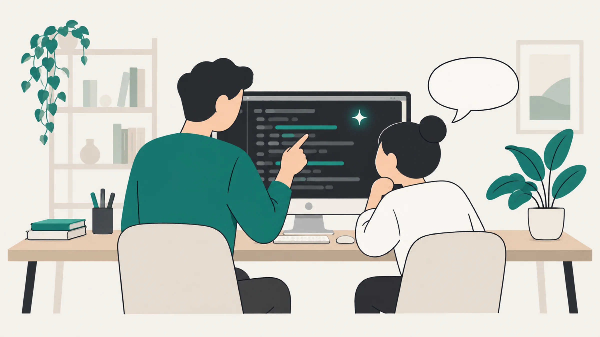
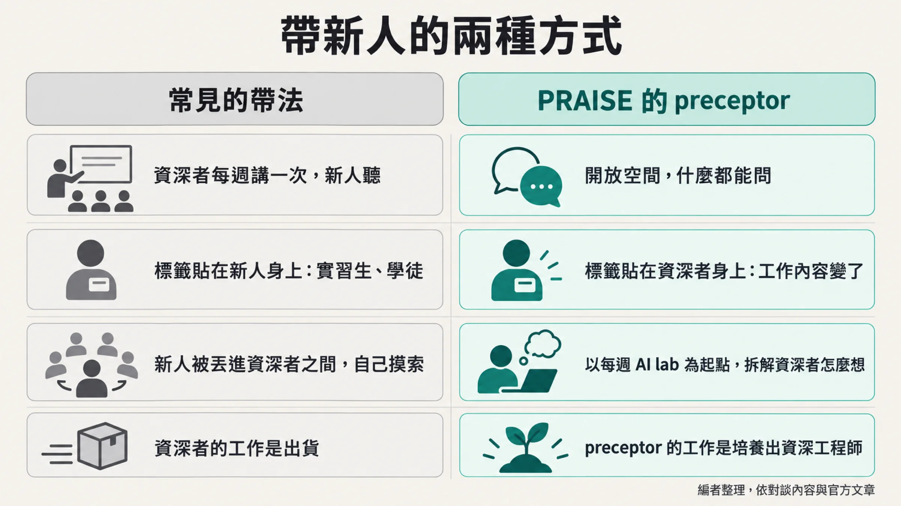
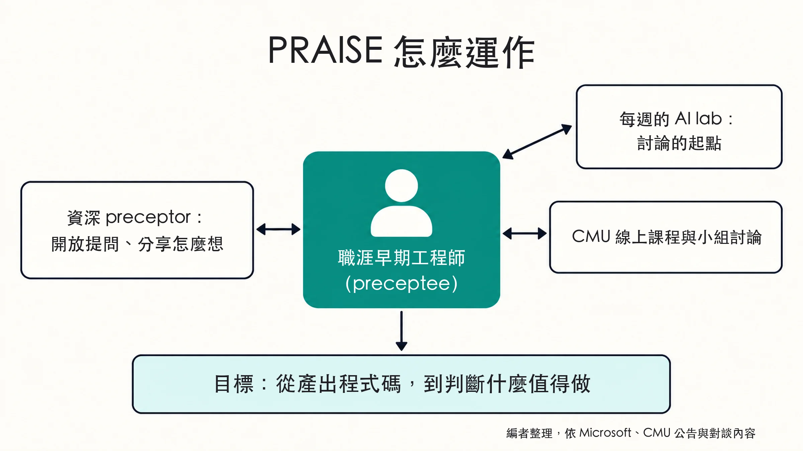
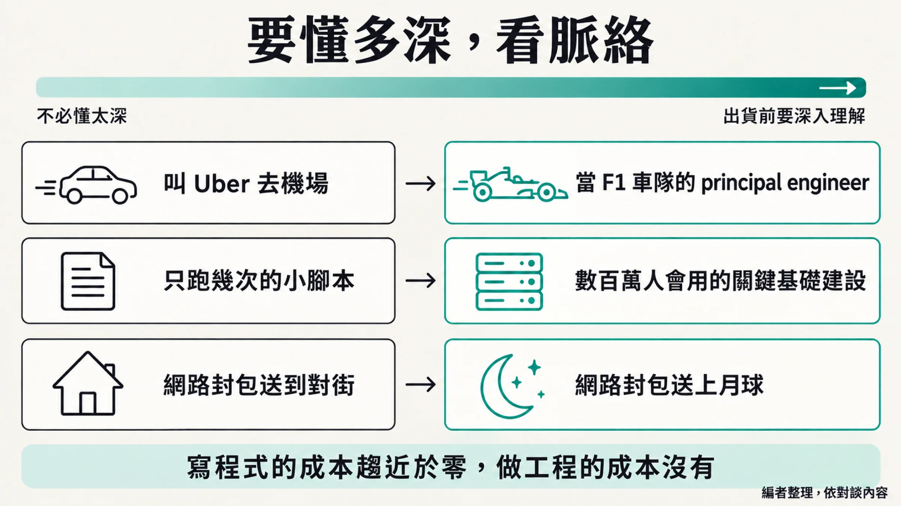

摘要
Microsoft Developer 在 2026 年 10 月 15 日放出一支約 35 分鐘的對談，談 Microsoft 與卡內基美隆大學（CMU）合作的 PRAISE 計畫。主持人 Scott Hanselman 擔心，如果業界相信 AI 能代勞，就會少雇職涯早期的工程師，最後讓人才管線斷掉。他和 Mark Russinovich 的對策是讓資深工程師多一個身分：preceptor，工作是把新人帶成資深者，再配上 CMU 的線上課程。CMU 的 Michael Hilton 從教室端補充：作業可以被 AI 一次做完，學生幾乎都坦白說，只在不在乎的事情上用 AI；他認為寫程式的成本趨近於零之後，工程判斷與讀懂、評論程式碼的能力反而要直接教。剛進 Microsoft 的 Julia Gao 則說，她現在的工作重心是審查與負責，而 preceptor 讓她問得到 AI 答不了的問題。
三位對談者是誰
- Scott Hanselman：Microsoft 的 VP, Member of Technical Staff（影片字卡與他的個人履歷），主持 Hanselminutes Podcast。他和 Azure CTO Mark Russinovich 是 PRAISE 官方文章與 CACM 論文的共同作者。
- Michael Hilton：CMU Teaching Professor，也是軟體與社會系統系（Software and Societal Systems）負責教育的 Associate Department Head（職稱全稱見 Microsoft 官方文章）。他在節目中說自己教的是高年級的軟體工程課；Hanselman 介紹他時說，他當 teaching professor 快十年，之前還當過 assistant teaching professor。
- Julia Gao：Microsoft 的軟體工程師，和 Hanselman 一起工作。Hanselman 在節目中提到，她 2024 年在 Microsoft 實習，之後從 Caltech 畢業，回來全職上班。她是 PRAISE 的 preceptee，也就是被帶的那一方。
一個斷層：雇資深、自動化新人
「Hire seniors, automate juniors.」這是 Russinovich 與 Hanselman 在 CACM 論文裡替業界寫下的新算盤，他們寫這句話是為了反對它。
Hanselman 在節目一開場就把話說重了：他和 Russinovich 相信 AI「is going to effectively collapse the early in career pipeline」（01:02）。他說，只要領導層和業界相信這些事「you can just have the AI do it」，就會少雇職涯早期的人。接著他連說了兩次：「We think that's wrong.」
論文〈Redefining the Software Engineering Profession for AI〉把這件事寫得更完整。它說，agentic coding 工具給資深工程師帶來 AI boost，對缺乏判斷力與脈絡、還不會駕馭 AI 的早期職涯開發者卻是 AI drag，開頭那句誘因就是這樣來的。但不雇新人，這一行的人才管線就會崩塌，組織將來會缺少下一代有經驗的工程師。論文開的藥方很簡單：照樣雇新人，認了他們一開始會拖慢產能，然後把「讓新人長大」當成組織正式要做的事。
graph TD
A["資深工程師用 AI，產出大增"] --> B["新人缺判斷力，用 AI 反而拖慢團隊"]
B --> C["企業的誘因：雇資深、自動化新人"]
C --> D["少雇新人，沒有人累積成資深者"]
D --> E["將來缺少下一代資深工程師"]這條鏈裡常被跳過的，是新人以前到底靠什麼長大。Microsoft 官方文章引了 Hilton 的話：以前職涯早期的軟體工程師，會做很多能累積專業的任務。論文也寫，傳統上新人是靠簡單的 bug fix 和寫程式任務熟悉一個專案，而這類工作正是現在最容易交給 AI 的。企業省下一份初階薪水，學校少了一批練習題，兩邊的算盤都打得通，缺口卻是同一個。
教室裡先出事：作業被一次做完
Hanselman 到大學演講時，習慣用一句話開場把聽眾嚇醒：「somewhere right now on campus, someone is vibing their degree. And we need to decide if we're okay with that.」
AI 進到 Julia 的大學生活，其實沒多久。她說：「I believe ChatGPT came out in my sophomore year, but it wasn't that good.」（01:43）所以「I don't think any of us really used it until probably junior, like later in my college years.」等 AI 變得好用，老師開始訂規則，用了 AI 就得在作業上註明。
Hilton 從教的那一側看到另一個斷點：「when AI could complete all of our homeworks in one shot」，學生就不必真的思考，複製貼上就能交（02:49）。他估計這個轉折大約發生在 2025 年秋季到 2026 年春季這兩個學期之間。
Hanselman 問 Julia 怎麼用 AI。她說作業要自己做，因為這樣比較能學到電腦科學需要的基礎；她找 AI，多半是想把概念弄懂：先有一個簡單的實作，再問 AI 還有沒有別的寫法，或是作業交完、答案和老師的不同時，請 AI 說明標準解是怎麼想的。Hanselman 聽完說，這幾乎是理想化的用法，她拿 AI 讓自己變強，不只是更快完成。Hilton 的回答很有分寸：「I definitely see that healthy attitude in some of my students, and I definitely don't see that healthy attitude in all of my students」。
他覺得，某種程度上，AI 也把教育裡一些老問題翻了出來。過去不少老師「just kind of relied on」一個前提：派了作業，學生只有不做或自己想出來兩條路。現在多了第三條路，他的說法是「there is this easy button」。所以他認為教師的工作多了一項：說服學生在乎，讓他們相信這份作業有意義。
他用匿名方式問學生，或在課後學生比較願意說真話的場合問，「they almost all say, I don't use AI for things that I care about and I use AI for the parts of college I don't care about.」（05:51）這句話他聽過「dozens, maybe hundreds of times」。換個角度看，這句話對老師也是一種回饋：學生拿 AI 打發掉的，大概就是他們覺得不值得做的那幾份作業。
舉重機器人與 DoorDash
Hanselman 用健身解釋為什麼不能全丟給 AI。肌肉要靠 time under tension 才會長；如果你派機器人去舉重，再跟教授回報「重量舉完了」，那你要的是重量被舉起來，還是自己變強壯？他說，只是撐過去、不管過程的用法，可能讓人「atrophied」（萎縮）。
Hilton 的課也用了這個類比。學期初，他和學生明講 AI 使用規範，隨後的小考加了一題加分題：想一個舉重機器人以外的類比。他說有一批學生各自想到同一個：去上烹飪課，卻叫 DoorDash 送一盤菜當作品交給老師。他的評語是：「You're not gonna get any better at cooking if you're just DoorDashing a plate」。
meat proxy：只負責按 OK 的人
Hanselman 接著把問題拉到「人的用處是什麼」。他提到 meat proxy 這個詞：「I ask you a thing, you ask the bot, then the bot tells you, and then you tell me what the bot said.」（08:07）他說，如果他要擔心自己的工作，擔心的會是工作變成只負責按 OK，因為「pressing OK isn't a job, unfortunately」。
緊接著他說，PRAISE 就是他和 Russinovich 想拿來處理這個問題的計畫。
為什麼叫 preceptor
preceptor 是護理界的用語，指在臨床上帶領新進護理師的資深者；preceptee 是被帶的人。護理界對 preceptorship 的描述，可參考 Ward 與 McComb 在 Journal of Clinical Nursing 的概念分析：一對一、有正式方案、限定期間（PubMed）。Microsoft 官方文章也明說，這個概念是從護理借來的。
Hanselman 解釋過為什麼挑這個字。把實習生或學徒丟進一群資深工程師之間，等於一開始就「bringing them in at a minus one」，要他們自己想辦法爬出來。護理的 preceptor 是受過訓練的訓練者，工作除了在醫院照顧病人，更明確的是「their job is to make new senior nurses」。
所以他們做了一件看似文字遊戲的事：「We wanted to give the senior person a label so that they understood that their job has changed.」（10:13）intern、apprentice、junior 這些標籤不貼在新人身上，要貼就貼在資深者身上。
他也承認自己以前不是個好 mentor，因為他的 mentorship 是「a weekly lecture from an old person」，年輕人聽完大概會覺得，這些回家問爸爸就好。
Julia 對 PRAISE 的描述正好相反。她一開始以為這只是另一個 mentorship 計畫，做完之後的評價是「I personally thought it was a lot better than just a mentorship」。差別在怎麼互動。她說那是很開放的空間，什麼問題都能問。每週有 structured AI lab，但 lab 只是起點；做完之後，她會追問設計，追問一個專案為什麼要這樣做，請 preceptor 從第一步講起，說說他會怎麼想。她拿來對照的是「listening to what AI does」：只聽 AI 怎麼做，和聽一個人怎麼判斷，學到的東西不一樣。

Hanselman 也問 Hilton，花這麼多心思挑一個字值得嗎？他說自己寫物件導向時一向覺得，名字決定了你怎麼對待一個物件。
Hilton 說，身為學者，他有資格當個咬文嚼字的人。他不覺得 preceptorship 這個字本身有魔力，重點是這個字被選出來時帶著明確的意圖：「I don't think that that specific word matters, but I think the fact that that word was chosen with a specific intent」。要做得跟一般實習不一樣，就該換個名字：「if it's going to be something different, call it something different.」他順手引了 Eisenhower 的名言「plans are nothing, planning is everything」（Eisenhower 1957 年演講的原話是「Plans are worthless, but planning is everything」，艾森豪自述是早年在軍中聽來的），結論是名字本身不重要，但「the act of naming it carefully really, really matters」。
PRAISE 實際怎麼運作
影片沒有把計畫的規格講完整。下表把影片、Microsoft 官方文章、CMU 新聞稿與 CACM 論文分開標示。
| 項目 | 內容 | 來源 |
|---|---|---|
| 性質 | Microsoft 內部的 preceptorship 計畫，把職涯早期的工程師配給資深 preceptor | 官方文章 |
| 全名 | Preceptorship for AI-accelerated Software Engineering（Hanselman 在影片中口說為 AI Augmented） | 官方文章；影片 |
| 配對實例 | Julia 的 preceptor 是她團隊的 principal，兩人會開 1:1 | 影片（Julia） |
| 日常節奏 | 每週的 structured AI lab，當作與 preceptor 討論的起點；她現在仍不定期與 preceptor 開 1:1 | 影片（Julia） |
| CMU 課程 | 新人在工作之餘線上修 CMU 電腦科學學院的證書課程。新聞稿發布當學期：Machine Learning in Production、Preceptorship in AI-Augmented Software Engineering I；春季：DevOps: Engineering for Secure Development and Deployment，以及 preceptorship 序列的下半 | CMU 新聞稿 |
| 學分 | 可抵 CMU 軟體工程碩士學分 | CMU 新聞稿 |
| 小組討論 | preceptee 會上課，並參加小組討論，把電腦科學的理論接到實際的軟體工程與在 Microsoft 的工作 | 官方文章 |
| 學習者與 preceptor 的比例 | 3:1 到 5:1 | 論文提議，非計畫實際數字 |
| 時程 | 至少一年，可能更久 | 論文提議，非計畫實際數字 |
| 參與人數 | 未公布；新聞稿提到將來可能納入其他產業夥伴 | CMU 新聞稿 |

論文設想的 preceptor 是資深者裡受過訓練的一部分人，每人帶三到五位新人，至少帶一年。PRAISE 實際怎麼配，目前沒有公開。官方文章替整件事下的目標是，讓新人「grow from producing code to deciding what deserves to be built in the first place」。
實習與現在：PR 掛的是誰的名字
Hanselman 問 Julia，當實習生和當有人罩著的正式員工，感覺有什麼不同？他強調 preceptor 不是 tech lead，他們「literally there to help you get better」。
Julia 把兩段經驗並排。「my internship in 2024 was less AI based」，她寫的是一個命令列工具，自動更新幾個檔案、建立 pull request，等使用者核准後完成。那時 AI 只拿來問語法，例如 Java 的寫法換成 C# 怎麼寫、類別怎麼定義；設計和邏輯早就想好，也由團隊其他人審過。
全職回來之後，她說「with the introduction of Claude Opus this year, like that has totally changed」，團隊現在用 multi-agent workflows 寫所有的程式，連她實習時親手做的那種自動化也一併交出去（14:52）。她的角色變成審查者：理解邏輯，請 AI 寫，看懂它、確認它放得進更大的系統，並且「take responsibility for it」，因為出貨的人是她。
Hanselman 把這一點接回 meat proxy：「your PR is in your name.」他說，PR 不是 Copilot 開的；Copilot 也許呼叫了開 PR 的 API，但上面寫的是 Copilot on behalf of Julia，「So when it goes bad, I assume you get the phone call.」
他也問，AI 產生程式碼的速度和你審查的速度一樣快、甚至更快，壓力大不大？Julia 說還有切換的負擔：同時開四、五個 agent，每個可能在處理工作項目的不同部分，得在它們之間切換。她說這是工程師要學著做好的事，因為 AI「always going to be here」，所以更該學會把它當工具用，也學會為自己做的事負責。
context 不只一種意思
Hanselman 問 Hilton：AI 什麼都能做了，深入理解還有什麼用？如果叫得到 Uber，還需要上一堂內燃機原理嗎？Hilton 先說：「anybody who says they have the answer to this question as of today is lying to you, to be honest.」接著順著這個比喻講：從家裡叫 Uber 去機場，確實不必懂內燃機；但要當 Formula One 車隊的 principal engineer，就得懂引擎的細節，即使你不是造引擎的人。他的結論是「a lot of this really boils down to context matters」。用在程式上也一樣：Julia 提過的那種小腳本，只跑幾次、檔案更新了就能人工確認，也許不必懂太深；但如果是成千上萬、甚至數百萬人會用的關鍵基礎建設，出貨前大概就得深入理解。
他說最近常和同事討論棒球的 value over replacement：對 CS 與軟體工程的學生來說，「What is our value over replacement over AI」？如果你的能力上限就是把任務寫成 prompt，那會有麻煩；而一個任務的 prompt，通常不會寫進脈絡。他舉的例子很口語：「are we sending this network packet across the street or are we sending it to the moon」（18:43），驗證、效能、安全要做到多重，全看任務與應用。人要做的事是：「you have to know what things to care about and you have to care about those things in the right context.」
Hanselman 聽完注意到，兩位來賓一直在說 context，說這個字有「two or maybe even three meanings」：AI 的 context window，以及解法所在的更大脈絡。他批評有人以為一百萬的 context window 什麼都知道；他說，Julia 在 Microsoft 累積的脈絡，就算 context window 無限大也不可能懂。
Julia 的版本比較貼近日常。一個產品通常橫跨多個 repo，各有各的複雜度；AI 很擅長解決一個 repo 裡的一個問題，但她認為它目前不太會把自己放進整個系統來看，改了這裡，可能在別處壞掉。她說，工程師自己和 preceptor 的知識就在這裡派上用場，他們知道一個功能在整個產品裡的位置。Hanselman 引了一句他不記得出處的話：AI 很容易寫 feature，不容易寫 architecture。Julia 用蓋房子回應：AI 可以很擅長蓋其中一個部分，但它也得明白那個部分擺在整棟房子的哪裡。

軟體工程不等於寫程式
Hilton 與 Mary Shaw 在 2025 年 11 月發表《紐約時報》評論〈You're a Computer Science Major. Don't Panic.〉。Hanselman 借孩子笑他的話，說這篇評論「very toxically positive」，但他讀來覺得很安心：文章說重要的是學會讀、理解、評論，當電腦程式的引導者。被問到快一年後這篇還站得住嗎，Hilton 說：「honestly I think it does」。
他的論點從區分開始：「there's a difference between engineering software and writing code」。他拿土木工程對照：很多土木工程師不去拌水泥、挖溝，但他們懂行，解的是真正的難題，要能設計出經得起車流的橋，避開 Tacoma Narrows Bridge 那種事。過去軟體工程師之所以一直是 coder，是因為「there was no way to distance ourselves from the raw materials」。
他保留了一個未知數：機器能寫多少程式、人還要自己寫和審多少，「is still very much an open question」。但他認為，就算機器寫了所有的程式，工程問題還是會存在，而且「as the cost of writing code approaches zero」，做工程、確保問題被好好解決的成本，完全沒有跟著趨近於零（24:17）。他說，幾乎每位他談過的工程師都不再整天寫程式，時間花在這些問題上：我們在做對的東西嗎？能準時、在預算內完成嗎？適合使用者嗎？安全、可用、可演進嗎？架構對不對？這些都是軟體工程問題，也佔掉更多時間。
讀與評論，要直接教
Hilton 說他至今仍然堅持的另一點：「reviewing code and critiquing code and understanding code is itself a separate skill」（25:06）。過去大家假定，學生寫作業寫著寫著，自然就學會讀；既然不能再指望每個人整天寫程式，就該把讀與評論當成獨立能力直接教。
他拿讀高中的兒子對照：要讀《The Odyssey》、評論它、寫報告，但從來沒有作業要他自己寫一首史詩。Hanselman 接話：詩歌鑑賞課可以只讀不寫，但他沒上過只讀程式、討論程式的電腦科學課；大家從寫 for loop 開始，四年後被期待去寫 Linux，好比從「the quick brown fox」開始練字，結業時就該寫出《The Odyssey》。他問 CMU 有沒有「程式鑑賞」課。
Hilton 說，還不到只讀和評論，但這部分確實大很多。他女兒是 CMU 大一，修 15-110 這門電腦科學入門課，大部分作業是要作答的 PDF，裡面有 Parsons problems（把打亂順序的程式碼重新排好），也有閱讀理解的題目。他說，就這門課來看，「they do more reading and comprehending than they do writing」，也還是會寫一些程式（課名見 CMU 課程大綱）。
但他也承認，課程追不上模型更新：「we can't … change our classes at the speed at which these frontier models are rolling out」，從發現問題到課程拿出解法，會有一段落差。
Julia 的瓶頸：讀、等 build、審 AI 的意見
Hanselman 說自己以前是寫程式慢，現在換了一種慢：要讀、要審，然後等 build server。Julia 同意，而且說得更細。第一是讀懂 AI 寫的程式，並確認它真的照你要的做；小改動通常沒問題，邏輯多一點的大改動就要花心力。第二是 build。第三是現在 PR 也有 AI 審查，每一則意見她都得判斷要不要處理，因為有時照做之後，AI 改了更多檔案，「expands the scope of your work item」，她只好說「wait, wait, wait」，請它退回。她的結論是：「It's not the actual coding part that takes time now.」時間花在「making that code be ready for production」，因為負責的人是她。
Hanselman 說他自己一直在運用對 code smell 的感覺和品味，也問 Julia 是不是覺得自己每天都在練判斷力。他還說，一百萬隻猴子配一百萬台打字機，終究也寫得出軟體，但「it's up to us to decide what's good and what's bad」。
hidden curriculum：品味與判斷，要明講
節目尾聲，Hilton 提到他最近和同事開的 Substack〈The Last Software Engineer?〉，最新一篇談的是 hidden curriculum（〈Slot Machine Programming and the Hidden Curriculum〉，2026-10-01）。他的論點是，過去有很多事我們以為學生會在過程中自己學會，「AI is exposing these skills and exposing the need for us to teach these skills explicitly.」
他引了一句話：「there's decades where nothing happens and there's weeks when decades happen」，說電腦科學現在顯然處在後者。這句話常被歸給列寧，但找不到原始出處（Quote Investigator）。他說，教材和教育要追上來還需要一段時間，所以他覺得像 PRAISE 這樣有人直接帶新人的 preceptorship 特別有用。他也提到，Julia 這種剛進公司的人，在大學時 AI 都還不是大事。
Hilton 回頭接 Hanselman 稍早談的品味與工程判斷：「We just kind of assumed that people would learn those as they built code over decades in the past.」（31:35）現在則需要直接教。怎麼教？可以加快學習循環，用 AI 教自己東西，但怎麼學會工程判斷與品味、怎麼學會用 AI 解決問題，是一組新的挑戰，他稱之為教育者的「fun pedagogical challenge」。他的態度很明確：「I think we shouldn't be doomers.」他期待會有更多人用軟體解決更多問題。
Julia 的轉變：從抗拒到主動約 1:1
最後 Hanselman 問 Julia 樂不樂觀。她先坦白，剛被排進這個計畫時，她的反應是「What is happening?」，自己每天要學的東西已經夠多，「what is this for?」（32:35）。走完一輪之後，她才看見好處。
她到現在還會不定期和 preceptor 開 1:1，覺得這是很好的延續。在 PRAISE 之前，她和團隊裡這位 preceptor 沒什麼話好說：他是 principal，而她手上的工作「they were not menial tasks, but they were like easier tasks」，碰不到「the deep end of things」，用不到他的知識。有了這層關係，她從他的經驗和處理問題的方式學到很多。她說，現在她明白資深者的時間比什麼都寶貴，是他們的觀點與經驗讓她成長為 Microsoft 的工程師。
Hanselman 的收尾是整場最容易被引用的一句。他說這是他和 Russinovich 寫論文時的「fundamental conceit」：「a senior engineer's job is to ship, but a preceptor's job is to ship seniors」（33:50）。這是他在訪談裡的濃縮說法，論文原文沒有這一句。他接著說，程式碼總會被寫出來，但你會留下來嗎？會不會因為有人願意投資在你身上，成為更快樂、更健康、更聰明的員工？
重點結論與實際啟示
以下是編者的看法。
給主管。 這場對談最實用的觀察，是標籤貼在誰身上：不必重新命名新人，要讓資深者知道自己的工作變了。如果組織只看資深者的產出，他們就沒有理由把時間花在新人身上。可以先檢查考核制度裡，有沒有任何一項是為了「帶出新的資深者」而設。論文的 3:1 到 5:1 只是估計，先小規模試，比直接照搬數字實際。
給資深工程師。 至少在 Julia 的經驗裡，她最受用的是可以開口問，以及聽到你從頭講起的思考過程。可以每週挑一個小任務，讓新人先用 AI 做，再坐下來問他為什麼這樣設計，也把你自己看一個 PR 的順序講出來。判斷力很難講清楚，但可以做給他看。
給新鮮人。 Hilton 轉述的那句學生心聲，其實可以直接拿來用：先想清楚哪些事你真的在乎，那些就自己動手，AI 留著補洞、對答案。進公司之後，PR 掛的是你的名字，讀懂 AI 寫的每一段，比寫得快重要。公司若有類似的計畫，Julia 的經驗是，就算一開始覺得是額外負擔，它也給了你一個理由去找資深者問問題。
可以帶走的話
- 資深者是從新人長出來的；今天少雇新人，幾年後就少了能帶人的資深者。
- 寫程式的成本趨近於零，工程的成本不會；要教的是判斷該做什麼、做得夠不夠好，以及讀懂和評論程式碼。
- 「A senior engineer's job is to ship, but a preceptor's job is to ship seniors.」
來源
- 影片：Microsoft Developer，〈PRAISE: Preceptorship for AI-accelerated Software Engineering〉，2026-10-15。YouTube
- Mark Russinovich、Scott Hanselman，〈What will the next generation of developers do when AI writes the code?〉，Microsoft Command Line，2026-10-15。文章
- CMU 新聞稿，〈Microsoft and CMU Team Up To Train Early Career Software Engineers〉，2026-10-15。新聞稿
- Mark Russinovich、Scott Hanselman，〈Redefining the Software Engineering Profession for AI〉，Communications of the ACM。ACM 官方 Substack 全文（2026-04-08）：theofficialacm.substack.com；期刊頁面：cacm.acm.org
- Mary Shaw、Michael Hilton，〈You're a Computer Science Major. Don't Panic.〉，《紐約時報》，2025-11-12。NYT
- CMU S3D 公告，Shaw 與 Hilton 的《紐約時報》評論。s3d.cmu.edu
- Michael Hilton，〈Slot Machine Programming and the Hidden Curriculum〉，The Last Software Engineer?，2026-10-01。Substack
- Scott Hanselman 履歷。hanselman.com/resume
- Ward & McComb，護理 preceptorship 概念分析，Journal of Clinical Nursing，2018。PubMed
- Eisenhower，Remarks at the National Defense Executive Reserve Conference，1957-11-14。American Presidency Project
- Quote Investigator，“There Are Decades Where Nothing Happens; And There Are Weeks Where Decades Happen”。quoteinvestigator.com
- CMU 15-110 課程大綱（Principles of Computing）。syllabus